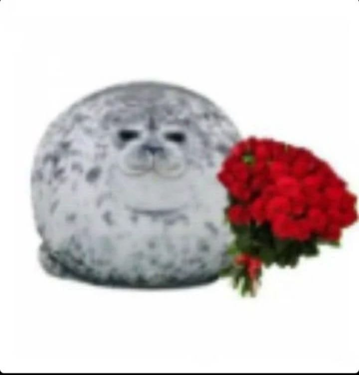
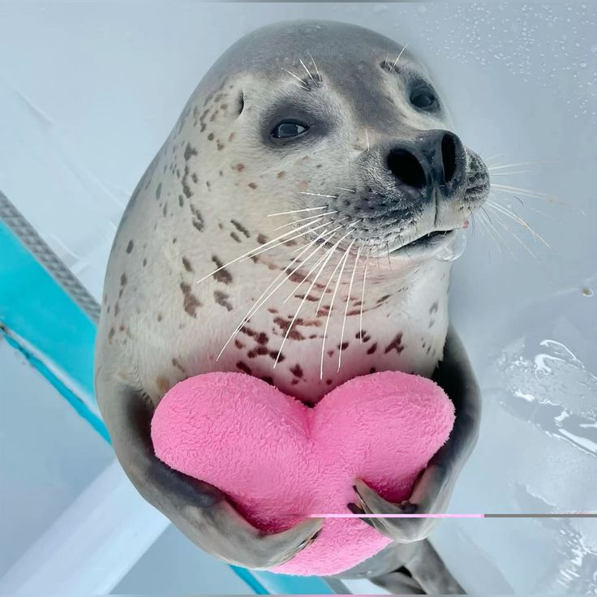

18 Eylül, 21:10
Bana ilk mesajını attığın saat. O an bunun hayatımda bu kadar güzel bir yere dönüşeceğini bilmiyordum. Zamanla seni tanıdıkça ne kadar komik, zeki ve tatlı biri olduğunu fark ettim. Seninle doya doya konuştuğum her günüm güzelleşti.
Seninle tanıştıktan sonra…
Telefonuma gelen her bildirimin senden olma ihtimali bile beni çok heyecanlandırıyo. Attığın şeyleri izlerken, anlattıklarını dinlerken, telefonda konuşurken zamanın nasıl geçtiğini anlamıyorum. Bazen kendimi fazla kaptırıyo muyum diye düşünüyorum, sonra da sana karşı böyle hissetmenin çok güzel olduğunu hatırlıyorum.

Sana karşı hislerim gerçek.
Senden baya hoşlanıyorum. Seninle gelecek hayalleri kuruyorum. Senin yanında kendim olabilmek, seni dinlemek, birlikte gülmek ve seninle olmak bana çok iyi geliyor.
Herşeyi seninle deneyimlemek istiyorum. Seninle evlenmek, yaşlanmak, saatlerce konuşmak, sarılıp uyumak, saatlerce öpüşmek, kucaklaşıp ağlayıp zırlamak. Seni kelimelerin yetmediği kadar çok seviyorum. O kadar çok ki bu siteyi yapmak sana olan sevgimin çeyreği bile etmez.

Benim olduğun için teşekkürler
Bu küçük sayfayı sana özel hazırladım. Çok büyük cümleler kurmadan şunu söylemek istiyorum. Hayatıma girdiğin için mutluyum, Ecrin. Seni tanımak gerçekten aşırı kıymetli. İyi ki varsın sevgilim.
Sevgiyle, Melih
Sen de beni bu kadar seviyor musun?
Hazır olduğunda birini seç